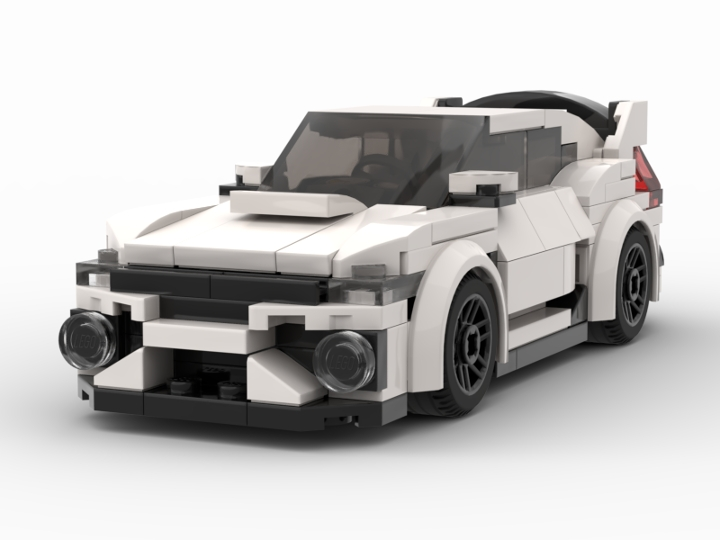

This is an image I've created with pixel art in the open source art platform Krita. I used a reference image to recreate
a donut with strawberry frosting as my first serious venture into making my own pixel art from scratch.

My name is Masha Tsykora, and I'm a senior computer science major at UMass Lowell.
I enjoy building with LEGO, cooking, and reading manga. I've also been learning pixel art this summer.
My favorite things to build with LEGO are sports cars and supercars. Here are a few of my favorites:
| Make | Model | Color |
|---|---|---|
| Bugatti | Bolide | Blue |
| Ferrari | FXXK | Red |
| McLaren | GT | White |
| Toyota | Supra | Yellow |
| Audi | R8 V10 | Dark Gray |
One of my favorite car builds I've done is the Honda Civic Type R. I used a model I found on Bricklink Studio as a start, and
then added my signature working doors and opening hood. The page has free 3D building instructions, and you're able to freely
rotate around the model with your mouse.
This is what it looks like, followed by the building instructions:

Bricklink Studio building instructions
I love looking at Pinterest for inspiration with my pixel art, these are some of my finds.
This is an image I've created with pixel art in the open source art platform Krita. I used a reference image to recreate
a donut with strawberry frosting as my first serious venture into making my own pixel art from scratch.
My favorite animals are bunnies, here's a cute GIF I found on Tenor.